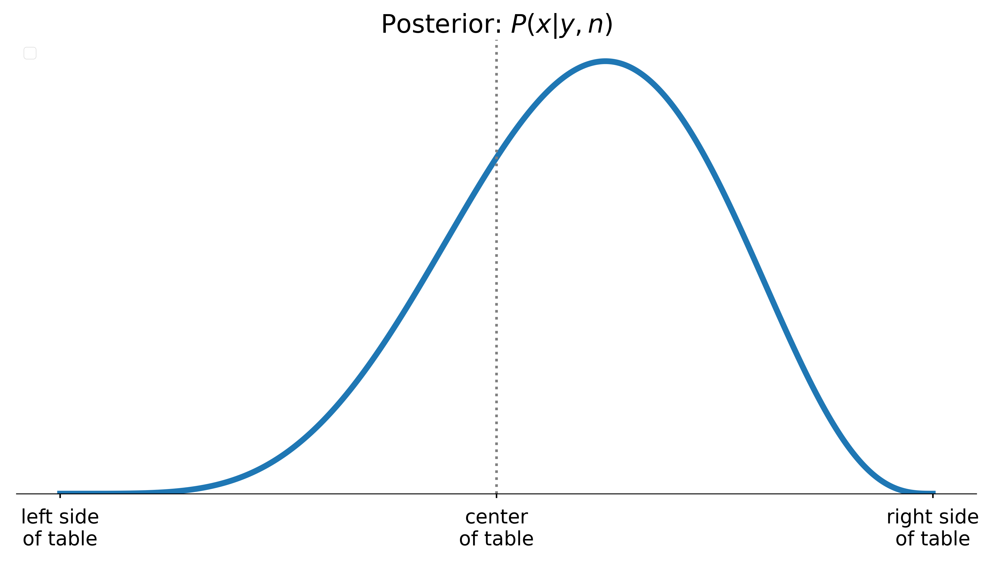

Bayesian Inference:
What is the posterior and why should I care?
Data Philly, Feb. 2024
Dante Gates
About me
Expectations for this talk
Goal: When you think of Bayesian Inference, think beyond point estimates and confidence intervals.
Non-goals: How to …
In fact… If you wish I demonstrated how to fit Bayesian models that’s a success
Background
Bayesian methods don’t do the same things better; they do different things, which are [sometimes] better
Bayes’ theorem
P(A\vert B) = \frac{P(B\vert A)P(A)}{P(B)}
Bayesian inference
P(\theta\vert D) = \frac{P(D\vert \theta)P(\theta)}{P(D)}
Bayesian inference
\underbrace{P(\theta\vert D)}_{Posterior} = \frac{\overbrace{P(D\vert \theta)}^{likelihood}\ \overbrace{P(\theta)}^{priors}}{\underbrace{P(D)}_{marginal\ likelihood}}
It’s a probability distribution
{\bf \underbrace{P(\theta\vert D)}_{Posterior}} = \frac{\overbrace{P(D\vert \theta)}^{likelihood}\ \overbrace{P(\theta)}^{priors}}{\underbrace{P(D)}_{marginal\ likelihood}}
Example: Billiards
Premise
- An initial ball is rolled (colored white)
- Subsequent rolls that fall to the left, score for Alice (colored blue)
- Rolls that fall to the right score for Bob (colored red)
- First player to reach 6 points wins
The problem
Alice has scored 5 times, Bob has scored 3, what was the position of the first roll?
Follow the recipe
\underbrace{P(\theta\vert D)}_{Posterior} = \frac{\overbrace{P(D\vert \theta)}^{likelihood}\ \overbrace{P(\theta)}^{priors}}{\underbrace{P(D)}_{marginal\ likelihood}}
Follow the recipe
- D=(y=5, n=8), Alice’s score and number of turns taken
- \theta=x, the position of the first ball
- P(x)=\text{Uniform}(0,1)
- P(y\vert D)=\text{Binomial}(p=x, n)
\underbrace{P(\theta\vert D)}_{Posterior} = \frac{\overbrace{P(D\vert \theta)}^{likelihood}\ \overbrace{P(\theta)}^{priors}}{\underbrace{P(D)}_{marginal\ likelihood}}
Follow the recipe
- D=(y=5, n=8), Alice’s score and number of turns taken
- \theta=x, the position of the first ball
- P(x)=\text{Uniform}(0,1)
- P(y\vert D)=\text{Binomial}(p=x, n)
\underbrace{P(x\vert y,n)}_{Posterior} = \frac{\overbrace{P(y,n\vert x)}^{likelihood}\ \overbrace{P(x)}^{priors}}{\underbrace{P(y,n)}_{marginal\ likelihood}}
Model likelihood: P(y\vert D)
Model priors and likelihood
Time to fit
üëã
Where was the first roll?
So what?
Probabilities exhibit predictable behavior
Posterior means should be correct on average, 50% intervals should contain the true values half the time, and so forth.
Posterior means
If we play this game many times the posterior mean produces reliable estimates of the position of the first roll
Posterior intervals
The 90% HDI of our posterior contains x_{i} ~90% of the time as expected
Posteriors as random variables
We can manipulate the posterior as a random variable, e.g. we can consider expressions such as
- cX
- X + Y
- \log(X)
- X | Y
- X < Y
Implication: posterior prediction
Treating the posterior as a random variable also justifies the ability to generate predictions from posterior
\overbrace{p(\hat{y}\vert y)}^{posterior\ prediction}=\overbrace{p(\hat{y}\vert \theta)}^{generative\ model}\times\overbrace{p(\theta\vert y)}^{the\ posterior}
What is the probability of Bob winning?
Bob must score 3 times in a row, thus p(B\vert x) = (1-x)^{3}
Due to our uncertainty of x we can frame this as
p(B\vert y, n)=\int_{0}^{1}{\overbrace{(1-x)^{3}}^{we\ want\ this}\times\underbrace{p(x\vert y,n)}_{we\ have\ this} dx}
What is the probability of Bob winning?
We can solve for this value analytically, or…
p(B\vert y, n)=\int_{0}^{1}{\overbrace{(1-x)^{3}}^{we\ want\ this}\times\underbrace{p(x\vert y,n)}_{we\ have\ this} dx}
What is the probability of Bob winning?
We can use numeric methods to generate samples from the posterior without explicitly solving the integrals required to analytically compute the posterior
p(B\vert y, n)=\int_{0}^{1}{\overbrace{(1-x)^{3}}^{we\ want\ this}\times\underbrace{p(x\vert y,n)}_{we\ have\ this} dx}
What is the probability of Bob winning?
The intuition is to think of the integrand as a weighted average, which is approximated by the sample frequencies of x_{i}\sim p(x\vert y,n)
p(B\vert y, n)\approx\frac{1}{N}\sum_{i=1}^{N}{(1-x_{i})^{3}}
Enter HMC
Enter HMC
New possibilities
This opens up the possibility of modeling outcomes, via simulation, that are more difficult to express analytically, such as
- The point spread between Bob and Alice
- Or, the number rounds required for Bob or Alice to reach 6 points
Simulating rounds remaining
We can simulate these outcomes with samples from the posterior
Random variables in, random variables out
We also expect reliable long term behavior from the posterior predictive distributions. Thus, simulations of, e.g., point spread should exhibit these properties
A subtle point
The point is subtle: Bayesian inference does not actually require the generative model; all it needs from the data is the likelihood, and different generative models can have the same likelihood. But Bayesian data analysis requires the generative model to be able to perform predictive simulation and model checking, … and Bayesian workflow will consider a series of generative models
Taking stock of our building blocks
- Expectations are expectations
- Intervals are intervals
- We can manipulate the posterior algebraically
- We use samples to approximate the posterior
- Tools like
pymcmake our solutions look more programmatic than analytic
References
- Jake Vanderplaas: In depth treatment of the analytic solution to the billiards problem
- Allen Downey: Commentary on Jake Vanderplaas’ article, much in the spirit of this presentation
- Richard McElreath: Another example of a simple beta-binomial model
- The Signal and the Noise: Nate silver calculates posteriors for simple discrete distributions throughout the book
- pymc 2, 3-put simulation: Well known case study, with an extension that explores simulations from the posterior.
- Stan User Guide: Nice explanation of posterior prediction/simulation
- Stan goes to the world cup: Blog post that highlights the utility of interpreting the posterior as a probabilities.
Example: Investing
Background: the Kelly criterion
In a simple game of chance that has a chance p of paying fair odds, one should invest the fraction f^{*}, of their total wealth W that maximizes the expected exponential growth rate of their wealth
p\log(1+f) + (1-p)\log(1-f)
Proposed by John Kelly in 1956
Properties of the Kelly Criterion
Properties of the Kelly Criterion include: a global maximum, a point of diminishing returns and “greed” that produces inevitable ruin.
Ed Thorp and the Kelly criterion
What if we want to apply the Kelly criterion to a “continuous gambling game”, such as the stock market?
Generalizing the Kelly criterion
If a game has a chance p(s) of paying out odds s, following the Kelly Criterion, our objective function is
\underset{f}{\argmax}\ \int_{}^{}{p(s)\log(1+fs)ds}
Where s could represent, e.g., the excess S&P returns.
Importantly, this approach requires we assign a probability distribution to s
How to model s?
Thorp took to modeling s analytically, and using numeric methods to handle the integral
p(s)=\begin{cases} h+\frac{1}{\sqrt{2\pi\alpha}}e^{\frac{-(s-\bar{\mu})^{2}}{2\bar{\alpha}^{2}}}& A<s<B\\ 0&\text{otherwise} \end{cases}
We’ll refer to this as the “empirical pdf”, because it’s based on the observed values \bar{\mu},\ \bar{\sigma}
Thorp’s conclusion: invest heavily

Motivating a Bayesian approach
What is the true data generating distribution?
Extending our take on the billiards problem
Instead of choosing a fixed pair (\mu,\sigma), we can integrate over a range of plausible values p(s\vert r)=p(s\vert \mu,\sigma)p(\mu,\sigma\vert r)
Extending our take on the billiards problem
Then, we find our investment strategy f^{*} by optimizing over samples of the posterior predictive growth rates
\argmax_{f} \frac{1}{N}\sum_{i=1}^{N}{\log(1+fs_{i})}
Code
Posterior predictive samples
Solving for f: brute force
# 1. generate samples of `r` from the posterior
with model:
pm.sample_posterior_predictive(idata, ...)
# just an alias
p_s_r = idata.posterior_predictive.p_s_r.values.ravel()
# 2. define the space we want to optimize over and calculate
# the expected growth rate
f = np.linspace(0, -1/np.min(p_s_r), num=40)
expected_growth_rate = np.log(
1 + (p_s_r[:, None] * f[None, :])
).mean(axis=0) # <- "integrate" over posterior predictive: p(s|μ,σ)
# 3. find the value of `f` that resulted in the highest expected
# growth rate
f[np.argmax(expected_growth_rate)]Solving for f: better
# define optimization problem: variable and objective
f = torch.rand(1, requires_grad=True)
def objective(f):
return torch.log(1 + p_s_r*f).mean()
# torch setup
optimizer = torch.optim.Adam([f])
# ↓↓↓ do this a lot ↓↓↓
for _ in range(N):
optimizer.zero_grad()
loss = -objective(f)
loss.backward()
optimizer.step()Posterior predictive growth rate
Not only can we extract the usual summary statistics from the posterior predictive, but we can ask questions like, “how often do we expect this strategy to produce a loss after a 100 year investment period?”

What’s next?
Seeing the flexibility using a tool like torch gives us, we can now imagine scenarios such as finding the optimal solution
f=\langle f_{1},\ldots,f_{n}\rangle
of fractional investments of a portfolio with returns
s\sim \langle N(\mu_{1},\sigma_{1}),\ldots,N(\mu_{n},\sigma_{n})\rangle
Granted, this introduces new complexity such as accounting for covariance amongst the assets, but we have a starting point
References
- The Kelly Criterion And The Stock Market: Ed Thorp details his approach
- Dark Worlds: Tim Saliman’s solution provides another example of optimizing a loss function over the posterior
What about the real world?
Imagine: these were conversion rates
Imagine: these were conversion rates
Resist the temptation
Similar to point-spread
We could consider the probability that one “channel” will outperform another: i.e. p(c_{1} < c_{2})
Comparison
Thompson sampling
Thompson sampling allows for “live” A/B testing, where action A is taken according to the probability that A > B.
Anomaly detection
These properties also hold for more complex generative models such time series forecasts with trend and seasonal components.
Another case for optimization
Bayesian marketing mix models have been gaining popularity. One of their primary uses cases is finding the optimal allocation of a budget across marketing channels.
References
- Austin Rochford: Bayesian Bandits
- PyMC Labs: Blog post on marketing mix models and their use cases.
- Dante Gates: Bayes in industry: Talk on the benefits of Bayesian Inference in industry
Husband and Father
Philly data scientist
wrote a haiku once